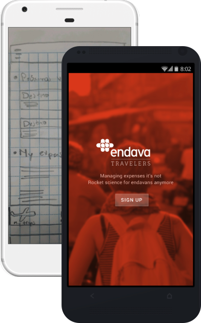
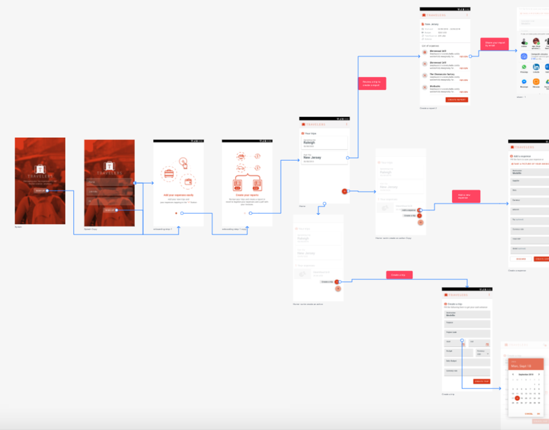

done
How to help users to create three excel files to register the expenses (different files for: cash advance, list of made expenses and the final excel macro to upload to Oracle).
The process of creating expenses reports for Endava during trips was a tricky one. The entire flow had lots of steps that were perceived sometimes as useless bureaucratic requirements. The process had the following points of improvement:
How to help users to create three excel files to register the expenses (different files for: cash advance, list of made expenses and the final excel macro to upload to Oracle).
How to provide an effective way of tracking invoices once the user have them in their hands.
How to create a ready and complete report of a trip that users could deliver to HR in order to legalize their expenses.

After I identify the main issues where users were having while creating expenses reports, I prototyped an initial solution through raw sketches and a low level prototype in Marvel app in order to validate how the main flow of the app could be designed. I conducted some guerrilla testing (3 users), and ask them to create a trip where all their expenses would be collected. I gathered results that helped me to create a more refined version of the prototype. This vearly early version could be seen here.
Through this first App map, and the first visuals, I could designed another prototype, this time in Invision. With this prototype I could conduct another round of user testing, that helped to validate the concept (if users think this could help to solve the problem of tracking expenses more easily), the understandability of the flow navigation, how users found the main tasks to do, how the text recognition functionality helped them to track their invoices, and finally, finding some points of improvement. This prototype could be seen in the following link.
After validating a first concept I was able to create the app architecture. Because time was running and we needed to have a first prototype to test in Beta, I started doing some visual work as I was working on the App navigation. This flow could be seen in this link.

Since this was an internal project, I designed the first version with the branding of the company in mind. The first version was the android app, done according the material design standards, and the latter was the iOS version, that I did attending the Apple HCI guidelines for their mobile devices.